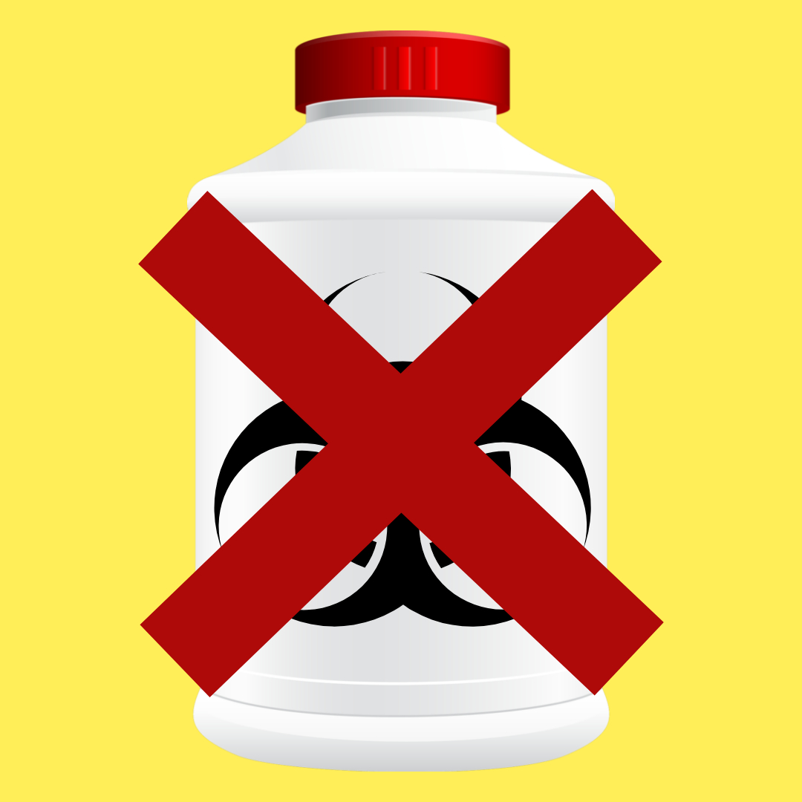
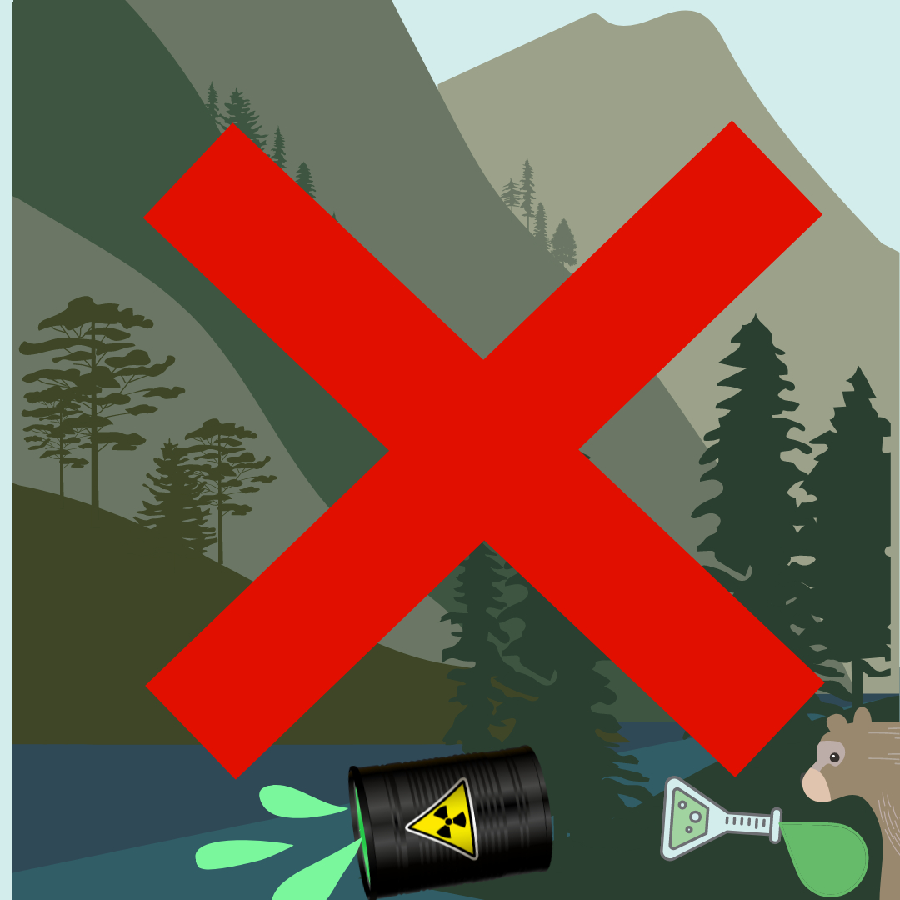
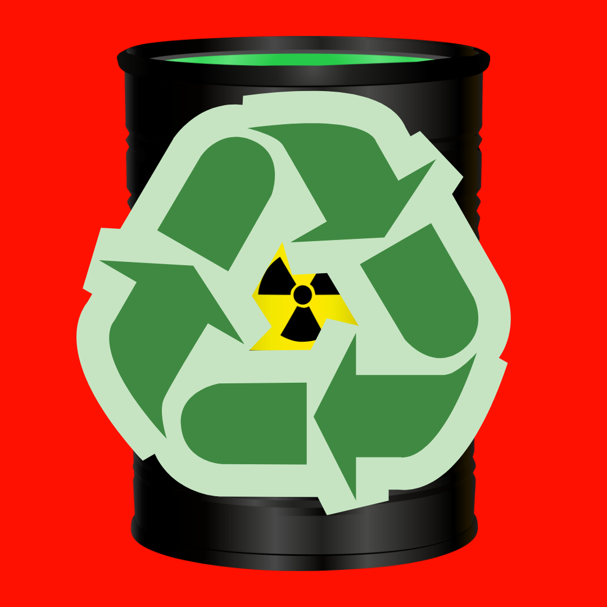
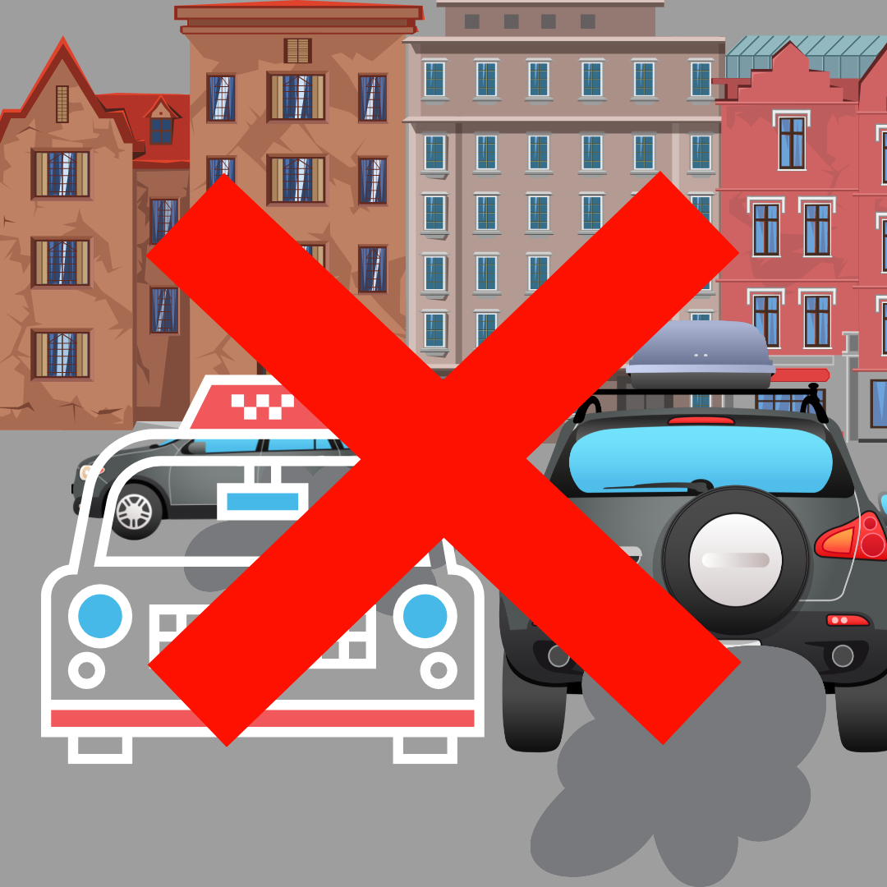
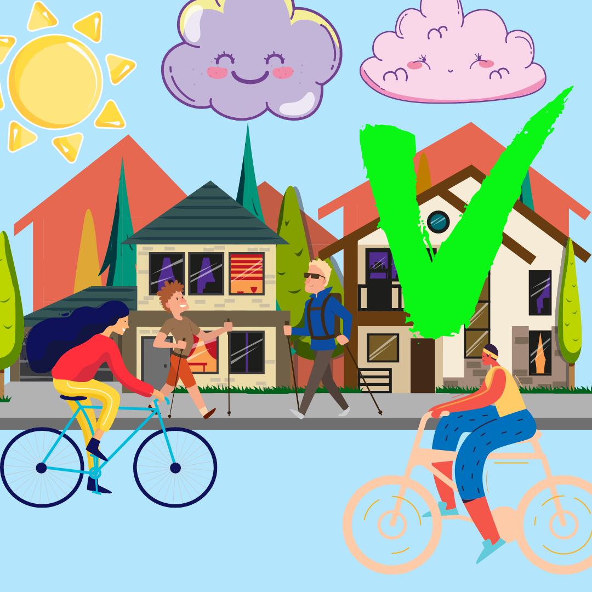
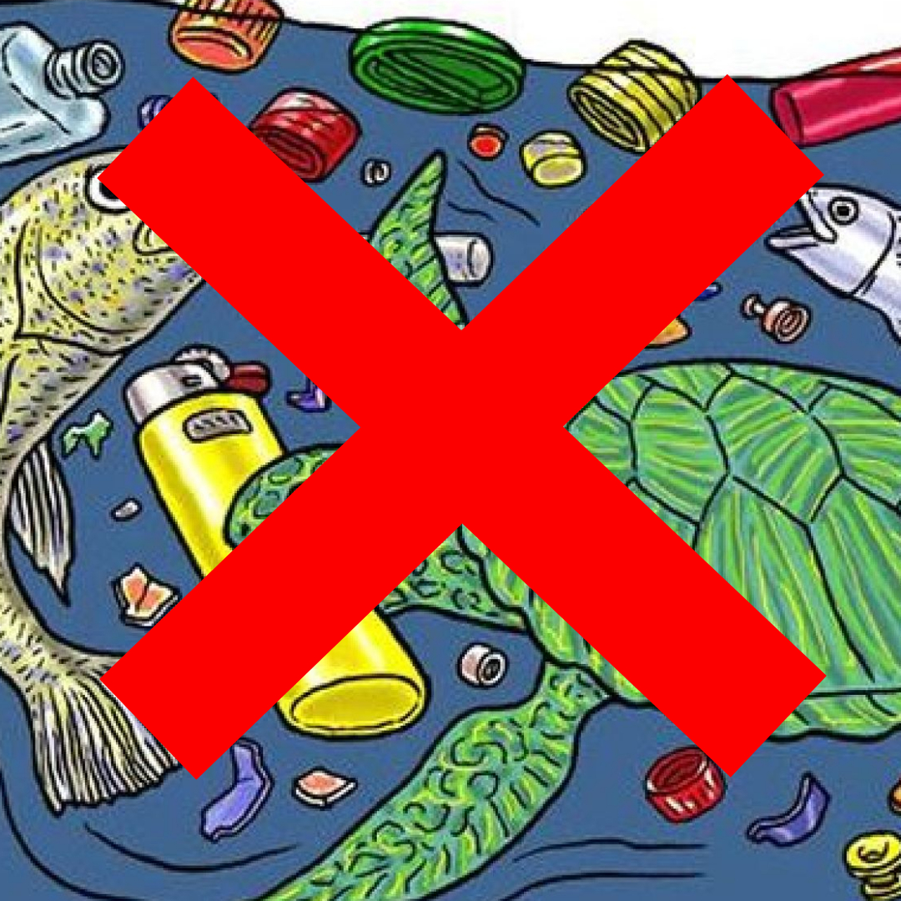

КАК ЗАЩИТИТЬ ПЛАНЕТУ ОТ ГИБЕЛИ:
1.Бережно относитесь к воде! Загрязнение воды – проблема экологии. Экология воды, которая страдает от деятельности человека, бумерангом отражается на состоянии всего живого на земле, ведь вода и есть сама жизнь.


2.Сократите количество используемых химикатов! Влияние химической промышленности на окружающую среду — одно из самых сильных. Вредные компоненты накапливаются в воздухе, сбрасываются в водоемы, остаются в почве. Воздействие химии на внешнюю среду. Химическое производство отрицательно влияет на экологию и здоровье человека.

3.Избавляйтесь от токсичных отходов правильно! Токсичные соединения попадают в воздух, воду и почву. Они вызывают удушье, проблемы с дыхательной системой, приводят к возникновению хронических заболеваний. Долгий срок разложения. Пластик, стекло, автомобильные аккумуляторы и шины разлагаются в течении длительного времени.


4.Ездите на машине как можно реже! Автомобильные выбросы загрязняют окружающую среду.
У неисправной машины выхлоп канцерогенных веществ увеличивается в 3-4 раза. Все это поднимается в атмосферу, вызывая катаклизмы.
Выбросы стоят на первом месте по загрязнению атмосферных слоев. Это вызывает глобальное потепление, становится причиной кислотных дождей.
Станьте активистом в сфере защиты воздуха от загрязнения. Вступите в местные группы, сражающиеся с загрязнением воздуха!


5.Производите меньше мусора! Мусор накапливается, воздействует на все сферы планеты, становится проблемами экологии: загрязняется окружающая среда возникает парниковый эффект над планетой истощается озоновый слой идут кислотные дожди обедняется почва гибнут леса наступают пустыни


6.Помощь в защите животных! Помогайте животным, особенно тем, чей род пропадает. Не истребляйте кротов, сурков и белок, а позволяйте им жить. Они могут создать определенные небольшие неудобства в вашем саду, но и у них есть своя роль в вашей экосистеме.
Не тревожьте такие дикие места, как леса, пляжи, болота и другие местности, где обитают дикие животные. При посещении подобных мест не сходите с тропы, дабы не причинить вреда среде обитания животных. Старайтесь защищать среду обитания животных.[9] Независимо от того, хотите ли вы помочь отдельной группе животных или всем тем, кто находится под угрозой вымирания, всегда и везде можно найти тех, кто остро нуждается в вашей помощи.
